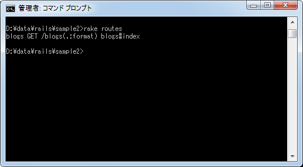
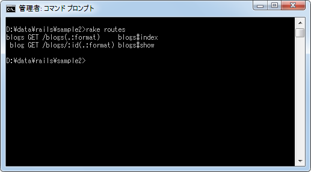
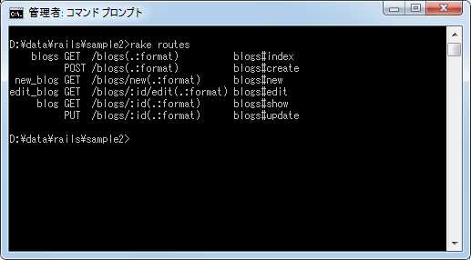
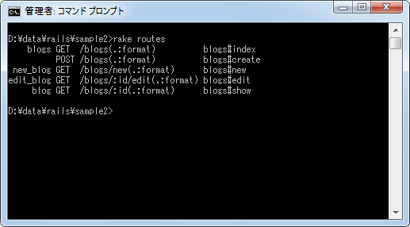

使用するアクションへのルーティングだけを設定
リソースベースのルーティングを使ってroutes.rbファイルに設定を記述すると自動で7つのアクションを呼び出すためのルーティングが設定されますが、常に7つのアクションが必要なわけではありません。ここでは必要なアクションへのルーティングだけを設定するような記述方法について確認します。
必要なアクションを指定
まず最初に必要なアクションを指定する方法です。書式は次のとおりです。
resources :リソース名 :only => :アクション名 resources :リソース名 :only => [:アクション名, :アクション名, ...]
例えば7つの基本アクションの中で「index」アクションだけを使いたい場合は次のように記述します。
Sample2::Application.routes.draw do resources :blogs, :only => :index end
では実際に「config/routes.rb」ファイルに記述した後で「rake routes」を実行して設定されたルーティングを確認してみます。

「index」アクションへのルーティングだけが設定されていることが分かります。
また「index」アクションと「show」アクションというように複数のアクションを指定したい場合は次のように記述します。
Sample2::Application.routes.draw do resources :blogs, :only => [:index, :show] end
こちらも実際に「config/routes.rb」ファイルに記述した後で「rake routes」を実行して設定されたルーティングを確認してみます。

「index」及び「show」アクションへのルーティングだけが設定されていることが分かります。
このように指定したアクションへのルーティングだけを設定することが可能です。
不要するアクションを指定
今度は7つの基本アクションの中で不要なアクションを指定する方法です。書式は次のとおりです。
resources :リソース名 :except => :アクション名 resources :リソース名 :except => [:アクション名, :アクション名, ...]
例えば7つの基本アクションの中で「destroy」アクションだけが不要な場合はは次のように記述します。
Sample2::Application.routes.draw do resources :blogs, :except => :destroy end
では実際に「config/routes.rb」ファイルに記述した後で「rake routes」を実行して設定されたルーティングを確認してみます。

7つの基本アクションの中で「destroy」以外のアクションへのルーティングが設定されていることが分かります。
また「destroy」アクションと「update」アクションというように複数のアクションを指定したい場合は次のように記述します。
Sample2::Application.routes.draw do resources :blogs, :except => [:destroy, :update] end
こちらも実際に「config/routes.rb」ファイルに記述した後で「rake routes」を実行して設定されたルーティングを確認してみます。

7つの基本アクションの中で「destroy」と「updat」以外のアクションへのルーティングが設定されていることが分かります。
このように7つの基本アクションの中で指定したアクションを除いたルーティングを設定することが可能です。
( Written by Tatsuo Ikura )

著者 / TATSUO IKURA
初心者～中級者の方を対象としたプログラミング方法や開発環境の構築の解説を行うサイトの運営を行っています。